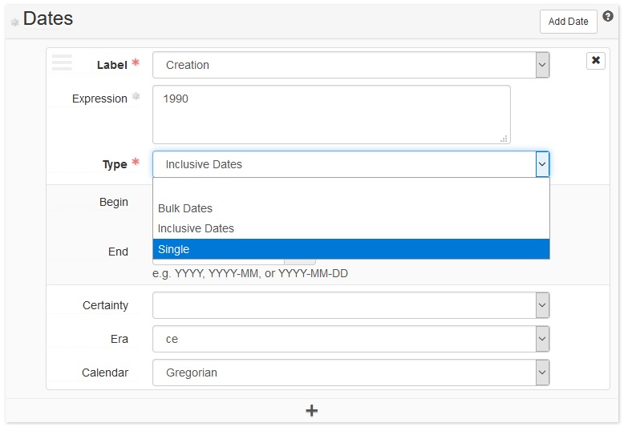

gregwiedeman.com/slides/EAD2021.html
Gregory Wiedeman
University Archivist
University at Albany, SUNY
“An encoding standard would guarantee that the machine-readable finding aids created today would be usable tomorrow!”
Daniel V. Pitti, “The Berkeley Finding Aid Project,” 1994 http://archive1.village.virginia.edu/dvp4c/arlpap.htm
We need to give up on this dream
As the data structure standard, EAD defines how systems work with archival description
<unitdate> within <unittitle><languagenote>, <title>, <date>, etc.<languagedeclaration><unitdatestructured>

ASpace exported “single” <unitdate> without @type
normalized_title_ssm
@type="inclusive" or @type="bulk"General Administrative Files, 1965-1966, 1978-1990, 1963, 1994, undated

{
"expression": "1958 May 31-1960 June 2",
"begin": "1958-05-31",
"end": "1960-06-02",
"date_type": "inclusive",
"label": "creation"
}
<unitdate label="creation" type="inclusive" normal="1958-05-31/1960-06-02">
1958 May 31-1960 June 2
</unitdate>
<unitdatestructured label="creation" unitdatetype="inclusive">
<dateset>
<daterange>
<fromdate standarddate="1958-05-31">1958 May 31</fromdate>
<todate standarddate="1960-06-02">1960 June 2</todate>
</daterange>
</dateset>
</unitdatestructured>
<extent>32 cubic ft.</extent>
<extent units="cubic ft.">32</extent>
gregwiedeman.com/slides/EAD2021.html
Gregory Wiedeman
University Archivist
University at Albany, SUNY